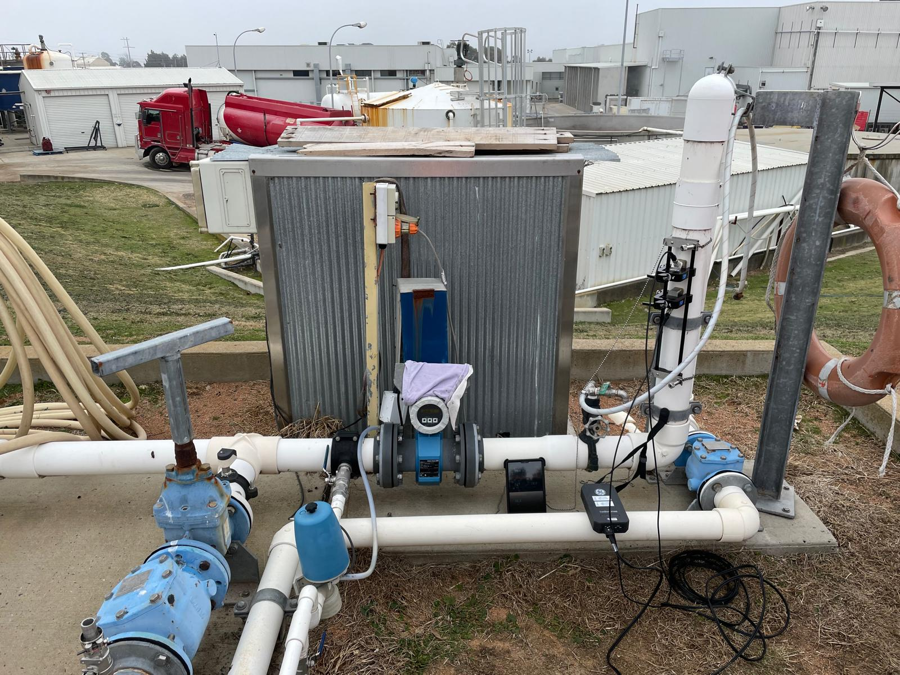
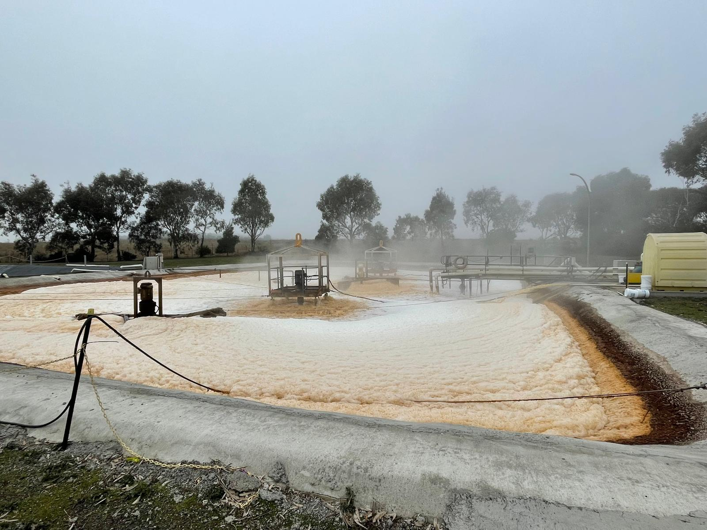
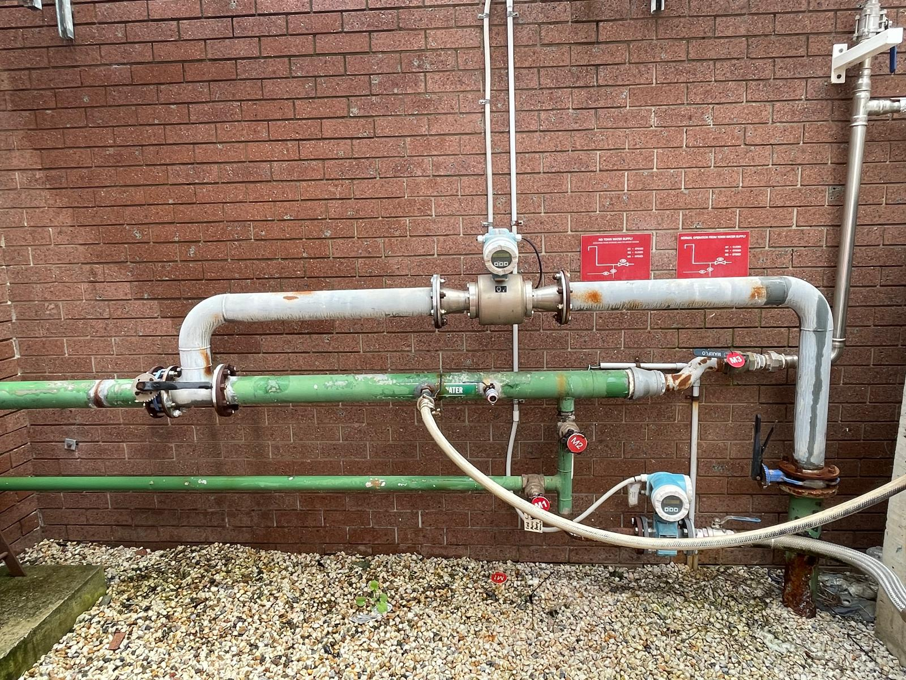
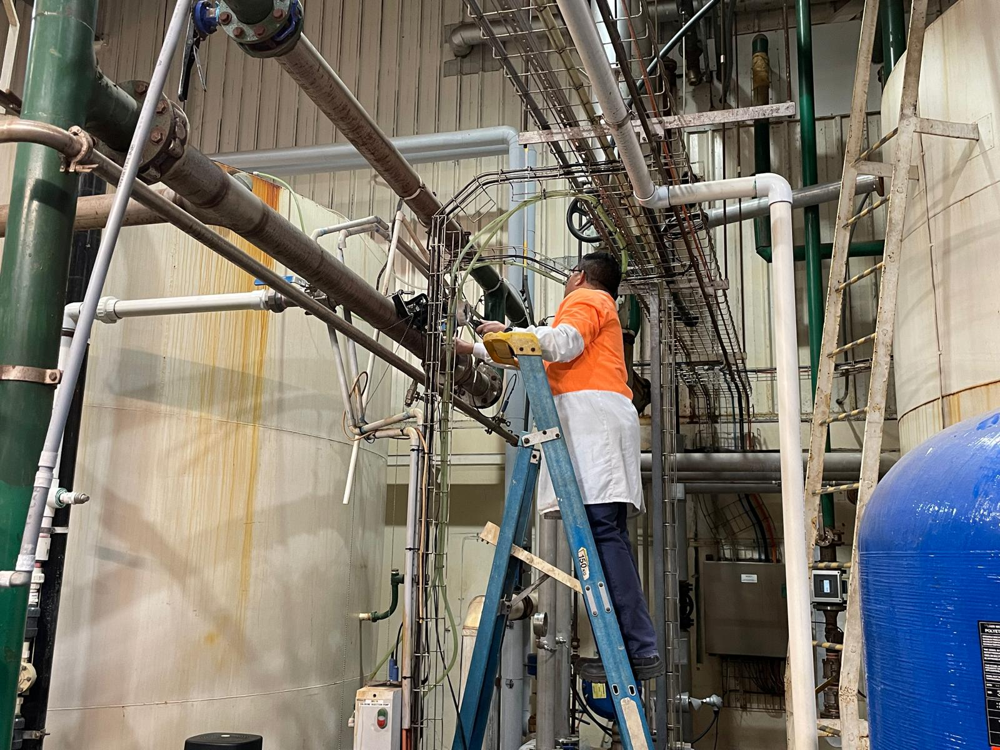

Assisted with real-world flow measurement and verification projects through OzGanga, a Sydney-based specialist in ultrasonic flow monitoring and liquid flow measurement systems. Working on-site at Devro (Kelso), I gained practical experience with industrial instrumentation, non-invasive flow measurement techniques, field data collection, and the engineering challenges associated with obtaining accurate measurements in operational environments.
Many industrial facilities rely on accurate flow measurement for process monitoring, billing, regulatory compliance, and water balance assessments. Inaccurate flowmeter readings can result in financial losses, operational inefficiencies, and compliance issues.
At Devro in Kelso, the objective was to verify existing flowmeter performance without interrupting operations or modifying pipework. Using non-invasive ultrasonic flow measurement technology, measurements were collected under real-world operating conditions and compared against installed flowmeters to assess their accuracy and reliability.

xyz.

xyz.

xyz.

xyz.
Contributed to flow verification activities across industrial applications involving process monitoring, utility management, and water treatment systems.
The work helped identify discrepancies between installed flowmeters and independently verified measurements, providing clients with greater confidence in system performance, billing accuracy, and regulatory compliance.
The project demonstrated how accurate engineering measurements directly influence operational decisions, environmental compliance, and financial outcomes.
This experience highlighted the difference between theoretical engineering calculations and real-world implementation. I developed a stronger understanding of measurement uncertainty, instrumentation limitations, flow measurement principles, and the importance of installation quality in obtaining reliable engineering data.
The project also provided valuable insight into how engineers diagnose practical problems, validate system performance, and create measurable value through accurate measurement and analysis.